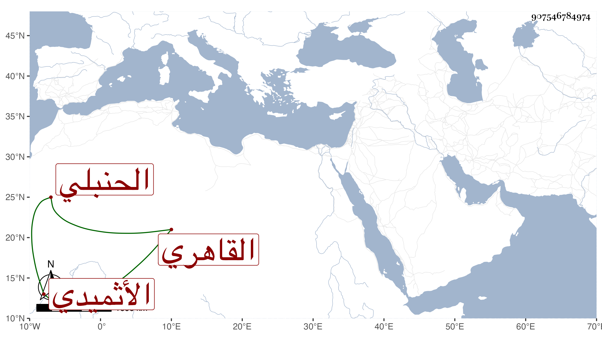

0902Sakhawi.DawLamic.ITO20230111-ara1.EIS1600.907546784974
Biography ID: 907546784974
171
محمد بن عبد الله بن أبي بكر بن محمود الشمس بن الجمال الأثميدي ثم القاهري الحنبلي ويعرف بالأثميدي . نشأ فحفظ القرآن وغيره ، وتنزل في الجهات ولازم دروسها ولم يمهر ، وتكسب بالشهادة بل ناب في الفسوخ والعقود عن المحب ابن نصر الله فمن بعده وسمع بأخرة على ابن الطحان وابن ناظر الصاحبة وابن بردس بحضرة البدر البغدادي وقبل ذلك سمع على صهره الشمس الشامي والجمال عبد الله الكناني ذيل مشيخة القلانسي للعراقي وغير ذلك وكذا سمع على الولي العراقي وغيره . مات في جمادى الأولى سنة ست وخمسين وقد أسن رحمه الله .
